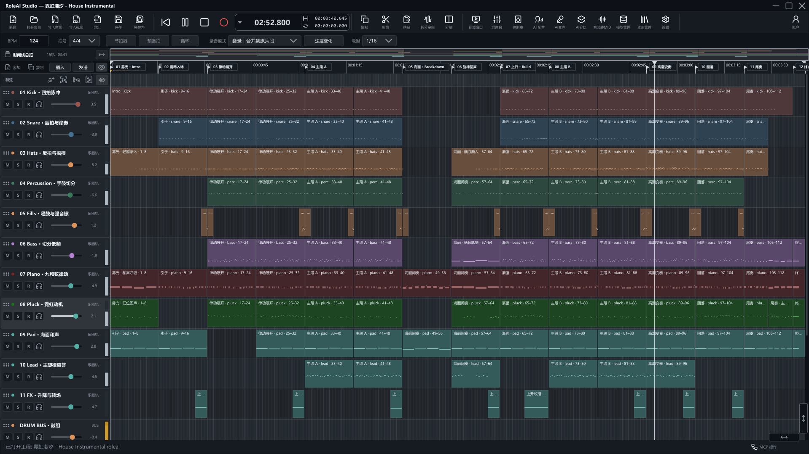

01 / VOICE
RVC 变声
原生本地实时与离线转换，导入受支持的 RVC v1/v2 F0 模型，保留演奏表达，探索新的音色。
日常推理无需配置 Python；训练使用独立可选组件。编曲 · 配音 · 声音制作
从第一段旋律、第一句台词，到完整的声音作品。
02 — 一个完整的创作空间
录音、时间线剪辑、自动化与混音。
完整工程，让每一次编辑都有落点。

03 — MCP 智能编曲
连接支持 Skill 与 MCP 的 AI 工具，在真实工程里编写 MIDI、调整音符与演奏表达、编排片段，并联动插件、自动化与混音。
从乐句到段落，每一步都落在可编辑的轨道上。你可以继续修改，也可以撤销。
获取 AI 编曲 Skill04 — AI 配音导演台
从剧本，到角色，再到每一句表达。
以场景、角色和台词组织配音，统一管理参考音色与情绪表达。批量生成，试听不同候选 Take，把选择留给你的耳朵。
选中的声音直接进入工程时间线，接续后期制作。
05 — AI 声音工具
改变音色、拆分声部、提取音符。
从已有素材，走向新的创作。
01 / VOICE
原生本地实时与离线转换，导入受支持的 RVC v1/v2 F0 模型，保留演奏表达，探索新的音色。
日常推理无需配置 Python；训练使用独立可选组件。02 / STEMS
标准六轨与高质量八轨两种模式，把混合音频拆为独立素材。结果自动建轨，继续处理人声、伴奏和混音。
03 / NOTES
将音频演奏转换为可编辑的音符。在钢琴卷帘中调整音高、时值与力度，接入音源继续编配。
06 — ROLEAI 官方插件
钢琴、鼓组、电吉他、电贝司、原声吉他、打击乐、管乐与专业合成器。
音源按需安装，使用权益以授权方案为准。均衡、动态、空间、调制与音高编辑，覆盖从基础修整到精细处理的工作流。
增益 · 均衡器 · 压缩器 · 门限扩展器 · 限幅器 · 立体声成像 · 混响 · 延迟 · 饱和与削波 · 综合计量 · 齿音抑制器 · 瞬态塑形 · 多段动态 · 调制器 · 音高编辑器
07 — 开始创作
条免费轨道 / 无限创作可能